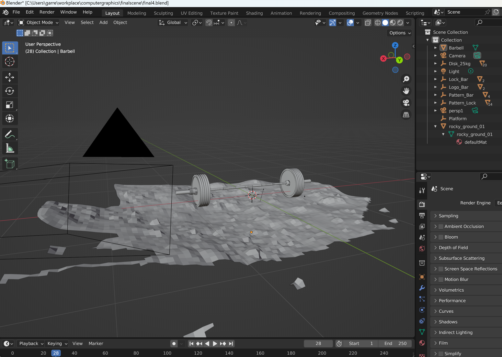
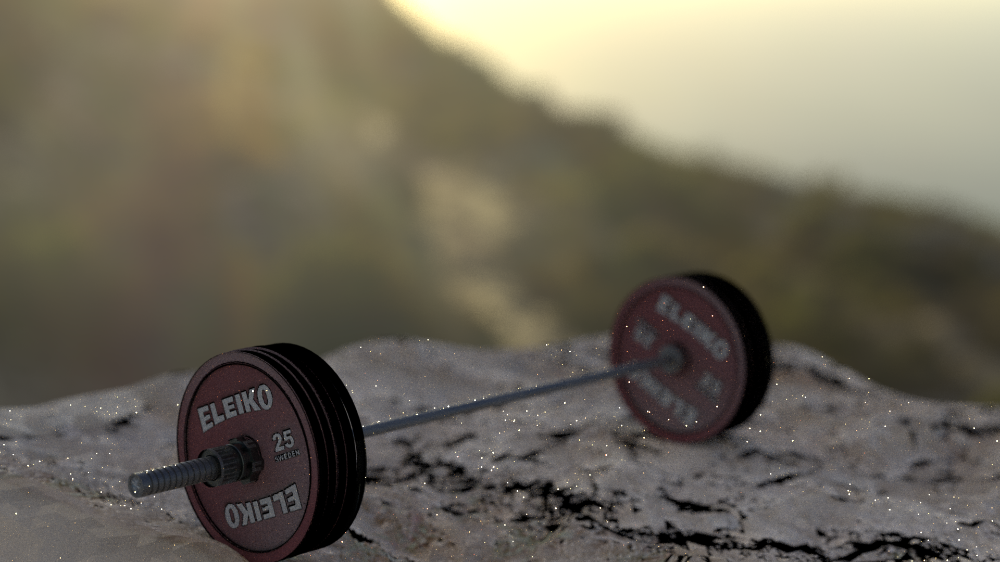
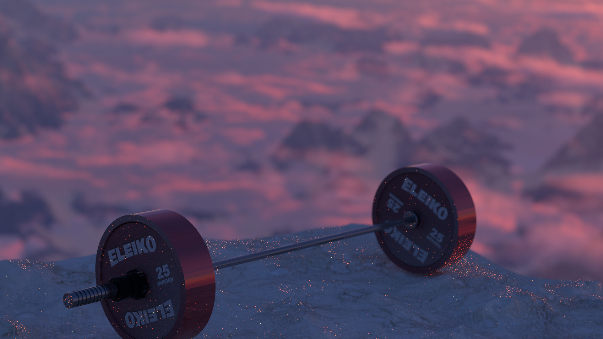

Overview of Features
In the end, I was able to implement the following features
from my proposal:
- Depth of Field
- Image Textures
- Bump Mapping
- Disney BSDF
- Environment Maps
These will all work together to help build up my final image. I will
use a Depth of Field camera in the scene to create a realistic camera
effect. Image Textures and Bump Maps will be used on almost every mesh
to produce a realistic view of the objects. I will also be lighting the
scene with an Environment Map, as well as taking advantage of scenic background
produced. Finally, every BSDF in the scene is a Disney BSDF, taking advantage
of all the parameters implemented for an artistic and realistic scene.
As time runs short, I have not been able to fully implement the proposed
Smooth Plastic Layered BSDF. After some consideration, I believe that
is more beneficial to my learning and growth to focus on a few more simple
and new features that I can complete, rather than have a
incomplete advanced feature. That being said, I have additionally implemented
the following features.
Additional Features
Additional BSDF Params:
Initially, I proposed implementing the 5 Disney BSDF params:
baseColormetallicspecularroughnessclearcoat
As I begin to dig into the
Physically Based Shading at Disney
, I put a lot of time into fully understanding the formulas and process
which should be evident from the clean and well documented code. The formulas were described in terms of all the
parameters, so it was quite easy to follow the theory and simply include some addition parameters. These ended up being:
specularTintclearcoatGloss
After completing this BSDF, I had access to a Clearcoat model and could simulate
a thin plastic layer over the surface, deterring me away from spending a lot of time implementing
another similar feature. In the end, I decided to explore some other new and simple features:
Modeling and Importing Meshes from Blender
As my scene idea contained meshes with a lot of intricate pieces, I worked to use Blender to modify
my scene, and then utilized the
BlenderNoriPlugin
to export my scene into Nori.
After a bit of online research, I found some meshes that I enjoyed such as this Royalty
Free mesh from
CGTrader
and this
CC Attribution
Licensed mesh from
Sketchfab
. I then worked in Blender to separate the meshes, perform some edits, cutting, resizing,
and smoothing, and spent a lot of time getting the BSDFs just right with image textures,
Disney BSDF params, and bump maps.

This then produced a massive .xml file that I compile and render with Nori. However, there was
still some issues, such as the Textures being imported under the wrong file path and
no bump maps in the scene, leading to a lot of time spent tweaking the scene. Finally, this produced
a result that took a long time to render, but none the less an actual image containing all of my features (see Building
up the Final Result below).
Intel Open Image Denoise Integration:
Finally, as I begin to render my images it became clear that there was a lot of noise
produced for how much time it took to render. That being said, to produce a good a clear image
I downloaded
Intel's Open Image Denoise
and changed my camera model to use a box reconstruction filter
rather than the gaussian. Then, I can simply feed my images into the denoiser to get much cleaner results.
Building up the Final Result
Throughout the process above, here are the different version of my image that I have
built working up to the final result. These scenes can all be found at scenes/image/.

V1 - No Denoising, No Bump Maps

V2 - No Denoising, Bump Maps on a rocky surface

V3 - All Features Utilized, Final Submission before Denoising
{kind=link}